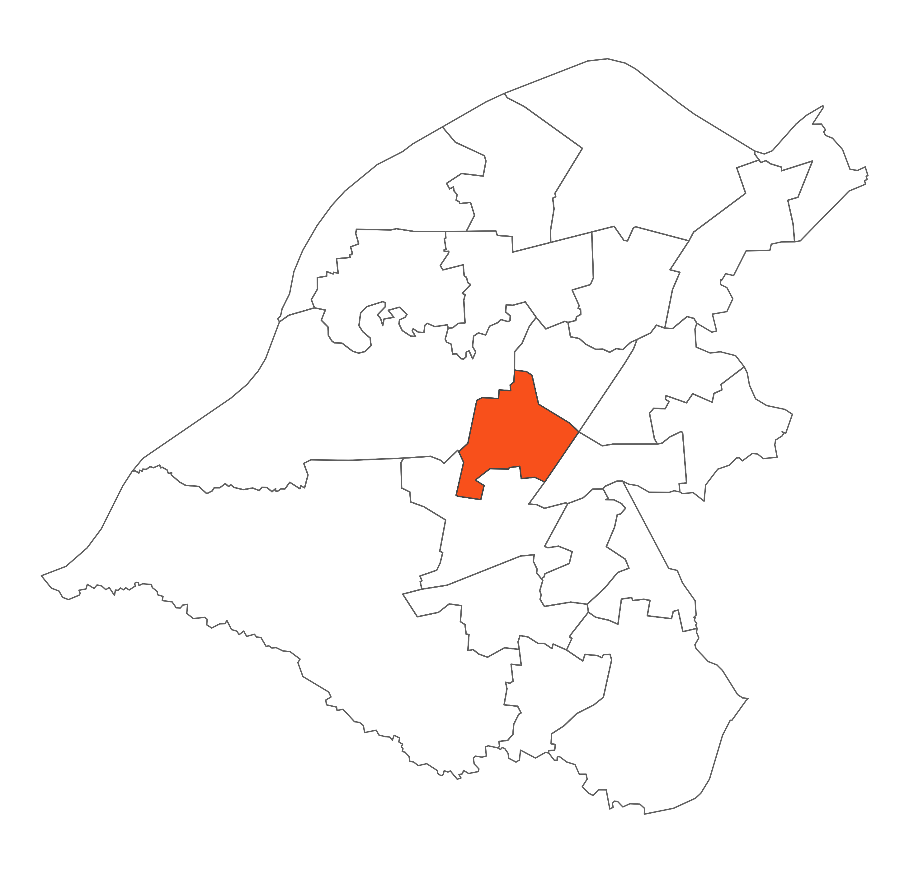

 St Mary's ward is densely populated and suburban in character. The eastern boundary is the A56 (Washway Road) and the western boundary is Dainewell Woods, Carrington Moss and the residential areas of Ashton upon Mersey and Broadheath lie to the south.